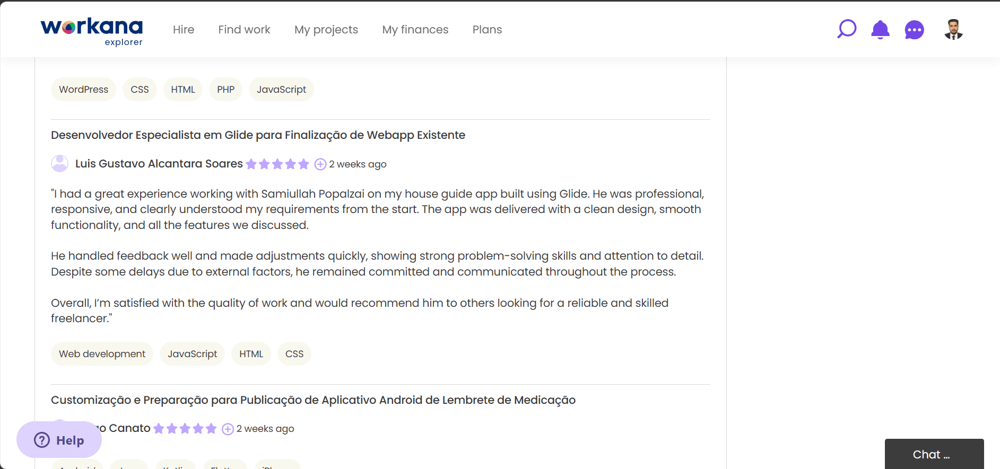
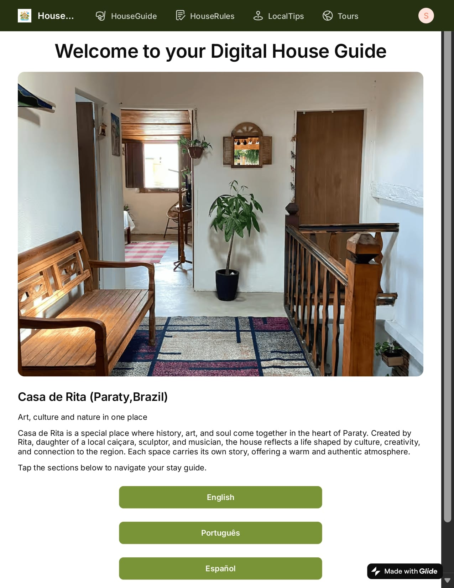
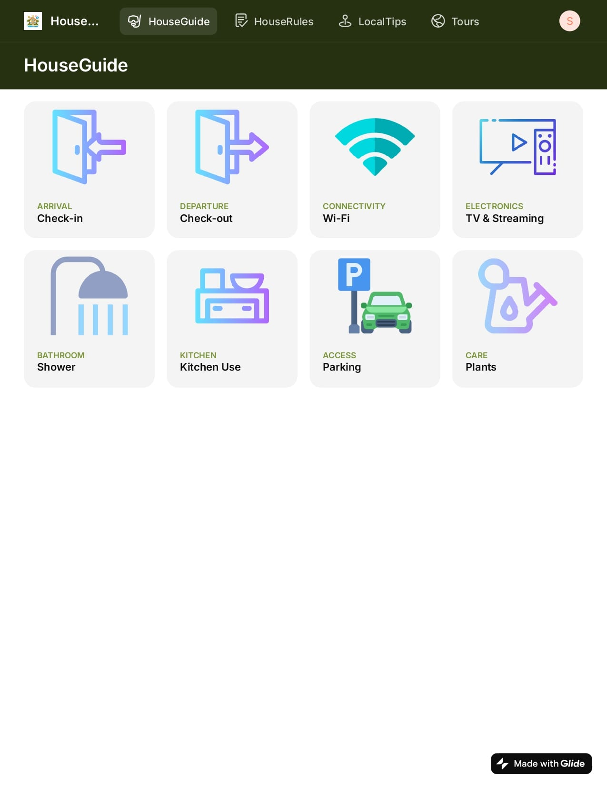
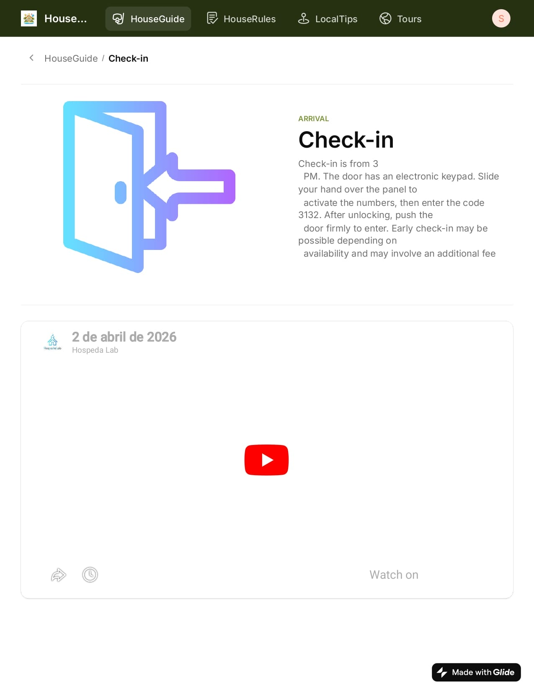
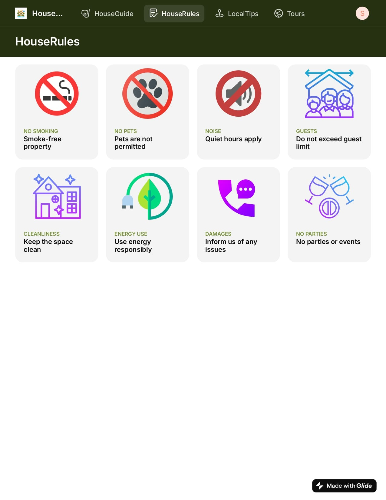
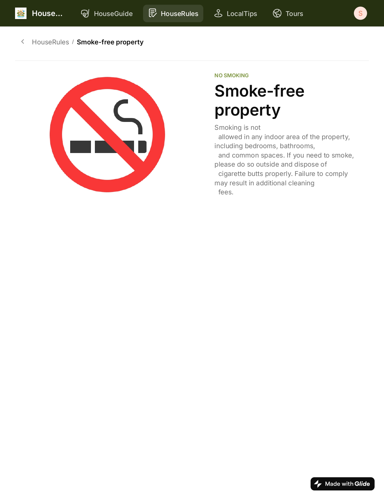
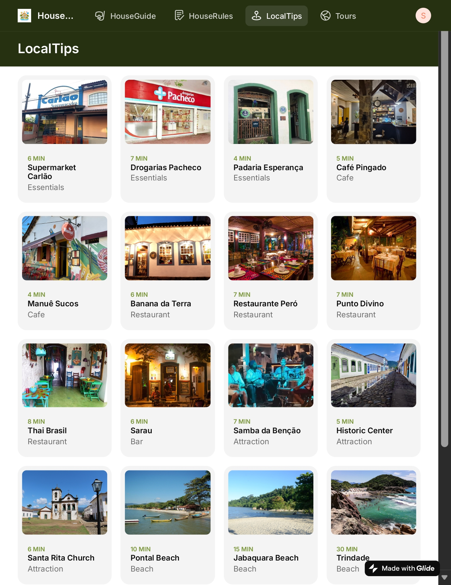
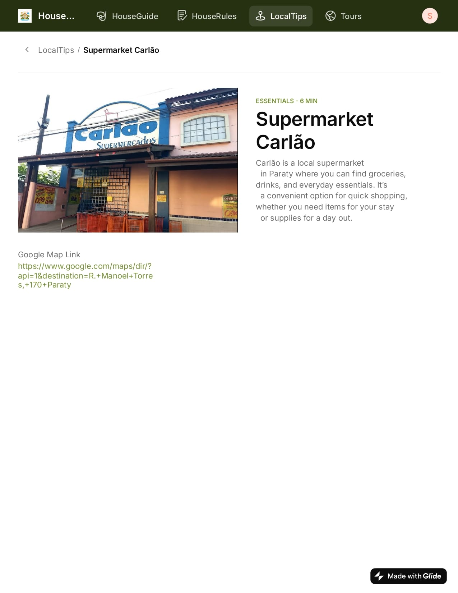
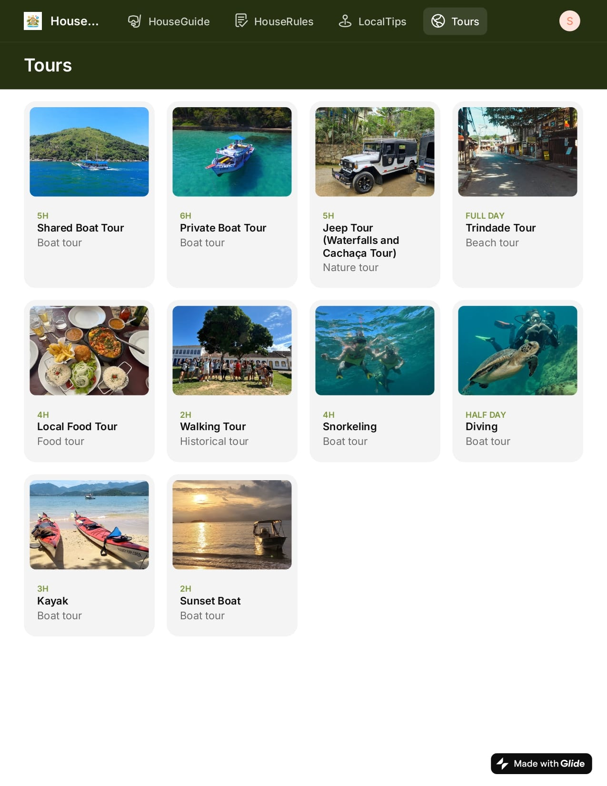
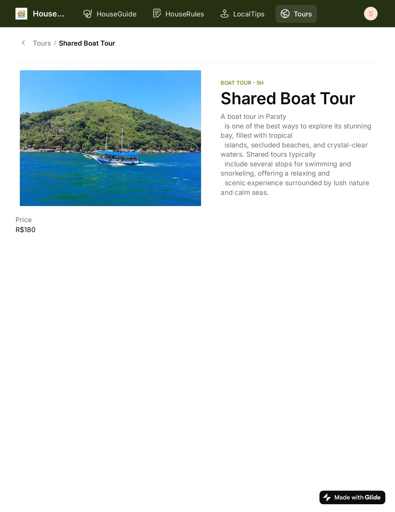

Tech Stack & Tools
Glide
Google Sheets
Figma
Progressive Web App
The app leverages Glide's powerful no-code engine connected to Google Sheets as a relational database. Each property has a dedicated row with columns for rules, tours, images, and access codes. QR codes are generated dynamically via API and embedded into printable assets for Luis. The front-end uses Glide's responsive components to ensure fast loading on any smartphone, even with weak cellular connections. Real-time synchronization means zero maintenance for the client.
My Role
As the sole developer and designer on this Workana project, I handled end-to-end delivery. I consulted directly with Luis to understand his printing workflow and revenue model, then translated that into a fully digital QR solution. I architected the database schema (Google Sheets + Glide), designed the user interface with a focus on simplicity and fast loading, and generated unique QR codes for each property with property-specific filtering logic.
I also implemented the payment flow integration (Luis handles the $140 fee directly, the app grants access via unique links), set up real-time content management so Luis can update house rules or tour info instantly without reprinting. Additionally, I conducted user testing with real tourists, iterated based on feedback, and deployed the live system. My role covered product strategy, UX design, no-code development, and post-launch support.

Client Review on Workana

Complete Case Study
$140
Pure profit per tourist – zero printing costs, unchanged price
5h → 2min
Workflow reduction – from half a workday to a coffee break
$0
Printing costs – eliminated hundreds of dollars per property
1 → ∞
Scalable – one QR code per property, infinite growth potential
The QR Tourist Guide App is a digital house guide system built for a client named Luis, whom I connected with through Workana. Luis previously managed multiple vacation rental properties by preparing detailed PDF documents for each property - containing house rules, local tours, activities, and essential guest information. He would print these PDFs and physically sell each document to tourists for $140 per property. This process was not only expensive due to recurring printing costs but also labor-intensive, requiring constant reprints, manual updates, and physical distribution.
I built a custom QR code based web application that completely eliminated the need for printing and manual paperwork. Each property now has its own unique QR code. When a tourist scans the QR code, they are instantly taken to a digital page that displays information exclusively for that specific property - including house rules, property guides, recommended tours, and local activities. The guest sees only the data tied to that property, ensuring a clean, relevant, and personalized experience.
The core business transformation: Luis still charges tourists $140 for access to the property guide, but now there is zero printing cost and zero physical effort. He simply provides the QR code (via sticker, frame, or digital message), the tourist scans it, pays for access, and immediately views all property information on their phone. Luis no longer needs to prepare, print, or distribute physical documents. The entire process is digital, automated, and scalable.
After deploying the QR Tourist Guide, Luis eliminated printing and binding costs entirely. What used to be a 5-hour workflow per property (formatting, printing, organizing) is now a 2-minute update from his phone. Tourists receive a modern, interactive digital guide instead of a paper booklet, which improved their satisfaction and engagement with local tours. Luis reported that guests now spend more time exploring recommended activities because the app makes information easy to browse. The $140 price point remains unchanged, but Luis's profit margin increased dramatically because overhead dropped to near zero. This project turned a legacy printing business into a scalable digital product.









Walkthrough
How I Built The App
I started by mapping Luis's existing PDF structure into a relational database using Google Sheets. One master sheet for "Properties" (name, QR slug, access code) and another for "Content" (rules, tours, activities, images). I used Glide as the frontend because it provides native-like performance, offline caching, and real-time sync without writing traditional code.
Next, I designed the UI with a focus on large touch targets and a logical hierarchy: house rules first, then tours/activities, then local tips. I implemented row owners and deep link filters so each QR code only reveals its matching property data. QR codes were generated using an API and delivered as PNG files for Luis to print on stickers or display digitally.
For the payment workflow: Luis collects $140 from tourists directly (via cash or transfer), then shares the QR code or a private link. The app itself does not handle payments but acts as the premium content gateway. I also added an admin panel inside the app where Luis can instantly edit any property's information. The entire build took 3 weeks from discovery to launch, including testing with real tourists.